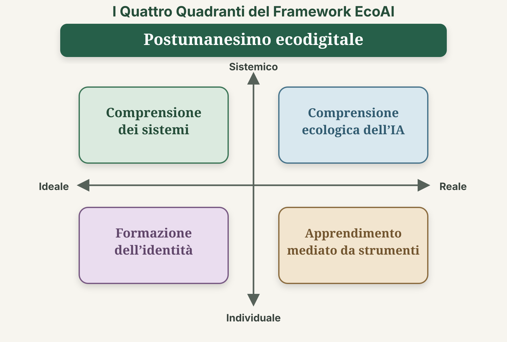

Framework EcoAI: un modello sociopedagogico per l’Antropocene
Il framework EcoAI propone un approccio interdisciplinare per integrare alfabetizzazione ecologica (Ecoliteracy) e intelligenza artificiale nell'educazione civica delle scuole secondarie, formando una nuova generazione di cittadini ecotecnologici.
Cosa ha prodotto la ricerca
Una mappatura di come 403 studenti della scuola secondaria di secondo grado si rapportano a sostenibilità e IA, con tre profili ricorrenti.
Un modello di competenze in quattro domini, con rubriche per progettare e osservare la didattica, che integra literacy ambientale, mediale e algoritmica.
L’EcoAI Index: cinque scale e 25 indicatori, costruito e validato in due fasi, pensato per monitorare l’educazione civica e il Target 4.7 dell’Agenda 2030.
Cosa emerge dai dati
IA e ambiente: emerge la richiesta di un’IA governata da principi etici, di equità e di sostenibilità. La richiesta si lega ai valori ambientali più che alla sfiducia verso la tecnologia.
Ecoliteracy: l’adesione ai valori ambientali generali è diffusa anche dove agency e competenze restano basse. Quasi un terzo del campione esplorativo (30,5%) risulta distante dai temi della sostenibilità.
Media digitali e cittadinanza: solo un quarto degli studenti (25,1%) legge l’IA in modo critico. Eppure, nel modello strutturale, è proprio la consapevolezza critica verso l’IA il legame più forte con l’agency ecodigitale (β = 0,732).
Cornice teorica
Postumanesimo Ecodigitale: la teoria originale su cui poggia il framework. Legge agency e responsabilità come capacità distribuite e asimmetriche tra persone, infrastrutture digitali e ambienti (Rubino, 2025, preprint SocArXiv).
Ecomedia literacy: i media letti come ambienti con un costo materiale (energia, estrazione, infrastrutture). È la prospettiva sviluppata nella review sistematica e bibliometrica pubblicata su Visions for Sustainability (2026).
Educazione civica e Agenda 2030: la Legge 92/2019 e le relative Linee guida come quadro normativo, il Target 4.7 come orizzonte in cui l’EcoAI Index opera da strumento di monitoraggio.
Fondamenti scientifici del Framework
EcoAI si fonda sul Postumanesimo ecodigitale e sulla ricerca relativa all’alfabetizzazione ecologica, ai media digitali e all’intelligenza artificiale. I quattro domini sono analiticamente distinti ma interdipendenti: nessuno costituisce un prerequisito o uno stadio finale. La tassonomia vigente è presentata di seguito; le Alfabetizzazioni EcoAI sono risorse trasversali e non ulteriori domini.
I Quattro Quadranti del Framework EcoAI
Il framework si articola in quattro domini analiticamente distinti ma interdipendenti. La diversa numerosità dei sottodomini è intenzionale e non implica una gerarchia. Seleziona ciascun dominio per esplorarne i contenuti.

Esplora le competenze del framework, consulta le rubriche EcoAI, approfondisci la validazione empirica dell’EcoAI Index o accedi alla raccolta completa di domande e risposte.
Le rubriche hanno funzione pedagogico-valutativa e formativa; non sono scale psicometriche e non equivalgono all’EcoAI Index. I livelli descrivono differenze qualitative nell’interpretazione dei problemi, nella rappresentazione delle relazioni, nell’uso degli strumenti e nella giustificazione delle scelte.
Esempio: Alfabetizzazione sistemica e mappatura.
- Alfabetizzazione frammentata: riconosce elementi ecologici o digitali, ma non li integra.
- Comprensione interconnessa: descrive alcune relazioni tra energia, materia, informazioni, tecnologia e ambiente.
- Alfabetizzazione sistemica matura: mappa componenti, processi, flussi, criticità e ritardi con strumenti appropriati.
- Alfabetizzazione ecodigitale avanzata: integra infrastrutture dati, energia, governance algoritmica, materialità del digitale e limiti planetari.
Sviluppo delle Competenze
EcoAI ha fatto proprie alcune competenze chiave di GreenComp (pensiero sistemico, pensiero critico, agency per la sostenibilità) e le estende all’intelligenza artificiale e alle infrastrutture digitali. I quattro livelli organizzano una progressione pedagogica proposta dal Framework. Seleziona una competenza per visualizzare i descrittori.
Posizionamento rispetto ai framework internazionali
EcoAI mette in relazione sostenibilità, infrastrutture digitali, intelligenza artificiale, pratiche informative, agency e posizionamento del soggetto. GreenComp, DigComp e i framework educativi sull’alfabetizzazione all’IA sono termini di confronto con funzioni differenti: la corrispondenza è concettuale e pedagogica, non una derivazione diretta né una prova di validazione.
GreenComp: quadro europeo delle competenze per la sostenibilità
GreenComp organizza la competenza di sostenibilità in quattro aree interconnesse: incarnare i valori della sostenibilità, accogliere la complessità nella sostenibilità, immaginare futuri sostenibili e agire per la sostenibilità. EcoAI condivide l’attenzione a valori, complessità, futuri e azione, ma assume come oggetto specifico le relazioni tra sistemi ecologici, infrastrutture digitali e IA.
Alfabetizzazione all’IA, DigComp, UNESCO e OECD
DigComp offre un riferimento per la competenza digitale; i framework UNESCO e OECD–Commissione Europea affrontano direttamente le competenze relative all’IA; i contributi sull’alfabetizzazione all’IA aiutano a distinguere comprensione, uso, valutazione critica e responsabilità. EcoAI li utilizza per il proprio posizionamento funzionale, senza presentarli come fonti dirette della tassonomia o come validazione delle rubriche e dell’EcoAI Index.
La specificità di EcoAI risiede nella configurazione congiunta di questi problemi, non nella pretesa di sostituire o superare i framework esistenti.
Relazione tra domini EcoAI e aree GreenComp
Mappa qualitativa basata su cinque competenze rappresentative di GreenComp. La scala ordinale distingue una pertinenza secondaria, rilevante o centrale; non rappresenta punteggi empirici né equivalenze tra framework.
I 4 domini Clicca su un dominio per evidenziarlo
Il grafico delle relazioni con GreenComp non è stato caricato.
Allineamento con gli Obiettivi di Sviluppo Sostenibile (OSS)
Il framework EcoAI contribuisce direttamente a numerosi Obiettivi di Sviluppo Sostenibile delle Nazioni Unite, promuovendo un’educazione per un futuro equo e sostenibile. Gli OSS costituiscono riferimenti pedagogici per collegare i domini EcoAI a problemi concreti. Le attività possono, per esempio, analizzare consumo elettrico, composizione delle fonti energetiche, impronta di carbonio, uso d’acqua e distribuzione diseguale dei costi ecologici dell’IA; oppure sostenere pratiche di cittadinanza globale e azione collettiva su problemi ambientali transnazionali.

OSS 4: Istruzione di qualità (target 4.7)
Il framework propone competenze di alfabetizzazione ecologica e critica all’IA per la scuola secondaria, in dialogo con GreenComp, e l’EcoAI Index come strumento di monitoraggio di gruppo. Domini: Comprensione dei sistemi, Apprendimento mediato da strumenti e Formazione dell’identità.

OSS 13: Lotta contro il cambiamento climatico
La Comprensione ecologica dell’IA porta nella didattica i consumi energetici e le infrastrutture dei sistemi di IA, mentre la Comprensione dei sistemi sviluppa la lettura dei cicli di retroazione. La scala AATI rileva la consapevolezza dichiarata dei rischi ambientali dell’IA.

OSS 10: Ridurre le disuguaglianze
La Formazione dell’identità affronta bias, equità e rappresentazione nei sistemi algoritmici, assumendo la giustizia ambientale e climatica come criterio di analisi.

OSS 16: Pace, giustizia e istituzioni solide
Il framework tratta la responsabilità algoritmica e la partecipazione civica come obiettivi educativi, operazionalizzati in parte dalle scale VAL e AGY.
Altri collegamenti con gli OSS